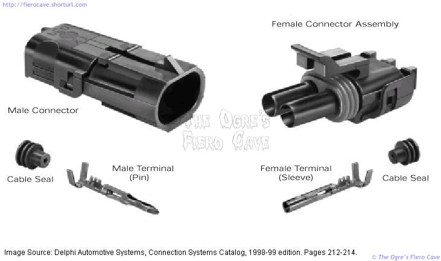
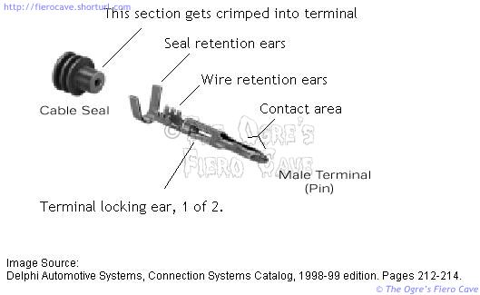
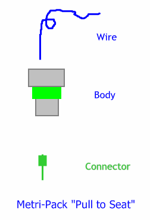

Go Home
Site Map
Go Home
Site Map
Weather Pack connectors
Our first image shows an exploded view of a two terminal Weather Pack connector. These connectors are available in 1, 2, 4 Flat, 4 Square, and 6 terminal configurations. There are also 3 terminal sensor connectors like the one used for the MAP sensor.

Delphi calls the hinged rear cover, shown closed here, "Terminal Position Assurance." The cover makes sure the terminals are fully seated and increases resistance to terminal pull out.
On larger Weather Pack connectors, like the Neutral Safety switch, you may run into a white "peg" stuffed into the connector latch. Delphi calls the peg "Connector Position Assurance." The peg prevents accidental disconnection from something hitting the latch.

Our final image shows the terminal in more detail. The female terminal is essentially identical except for the contact area. For those who may wonder, yes, you can put the "wrong" terminal in a shell. The MAP sensor connector does just that. It has 3 male pins in a female shell.

Metri-Pack "Pull to Seat"
Old way: Crimp connector on wire then stuff connector and wire into body.
"Pull to Seat" way: Push wire thru body, crimp connector, and then pull wire back. Like this:
